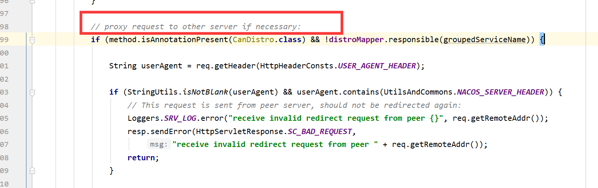
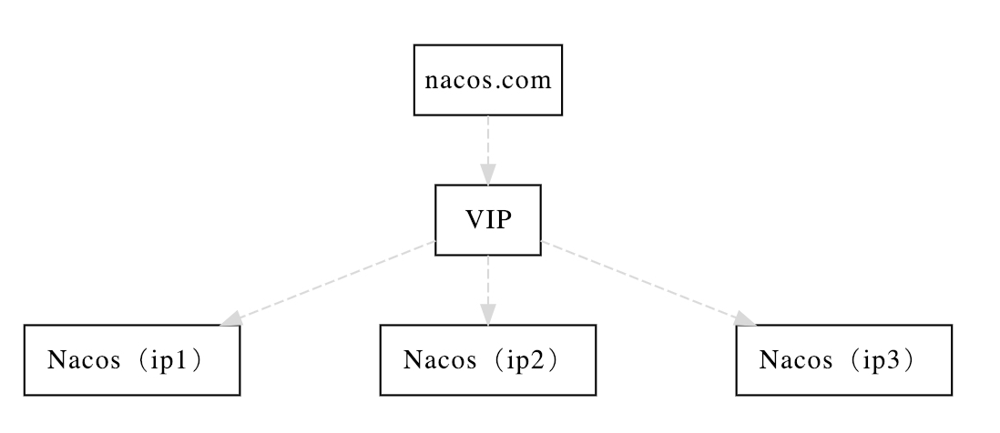
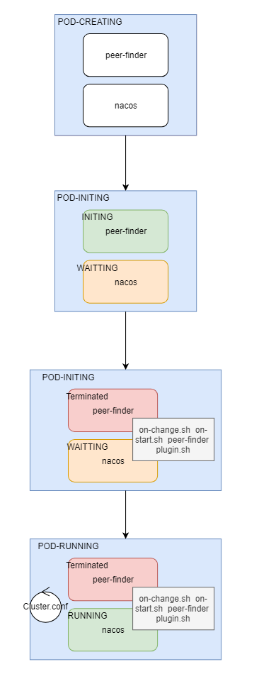
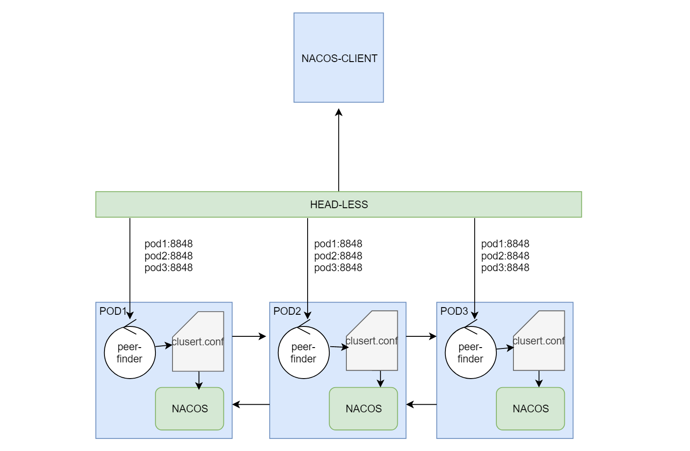

几个方面谈一下Nacos的设计（作为注册中心，基于此时的develop分支）
原创博文，转载请注明来源
首先需要声明的是Nacos Cluster虽然内部使用了Raft协议但是对于Nacos客户端，Cluster实例是无状态的。客户端配置集群地址有两种方式：
1.通过配置serverAddr列表，客户端将访问集群时，随机从列表中选择一个实例访问：
NamingService configService = NacosFactory.createNamingService("10.22.0.137:30253,10.22.0.137:30254,10.22.0.137:30255");当然，一般情况下我们并不会直接配置Nacos实例的IP，可用用域名，以便能动态发现。
2.通过Properties配置endpoint，定时访问，感知集群变化，并随机从接口返回的列表中选择一个实例访问，客户端会与Endpoint创建LONG PULL。
Properties properties = new Properties();
properties.put(PropertyKeyConst.ENDPOINT,"10.18.90.16");
properties.put(PropertyKeyConst.ENDPOINT_PORT,"8850");
NamingService configService = NacosFactory.createNamingService(properties);实例信息的由一个叫 Distro （com.alibaba.nacos.naming.consistency.ephemeral.distro.DistroConsistencyServiceImpl）的一致性协议维护，有如下几个特点：
举例解释一下第3点：现有Nacos集群实例A,B,C 共3个。从客户端与集群的交互知道，客户端随机从A,B,C中随机选择一个实例访问，客户端NACOS-DEMO选择访问B的注册实例接口，如果NACOS-DEMO的请求应该属于C处理的话，本次请求将会被B实例中的DistroFilter拦截掉，并由B转发到C。理解起来，其实挺绕的，但是为什么这么设计呢？毕竟A,B,C的实例数据都会最终一致的，我随机访问任意一个实例就好了
我的解释是：
由于数据是最终一致的，中间会存在同步过程，所以如果存在写了马上查的场景，则很有可能查不到的情况（客户端写和查两次请求落在了两个不同的实例）。但是如果通过算法，一个实例的增删改查都在同一个确定的实例，就不会出现这种情况了。

ephemeral字段的介绍
（Nacos 在 1.0.0版本 instance级别增加了一个ephemeral字段，该字段表示注册的实例是否是临时实例还是持久化实例。如果是临时实例，则不会在 Nacos 服务端持久化存储，需要通过上报心跳的方式进行包活，如果一段时间内没有上报心跳，则会被 Nacos 服务端摘除。在被摘除后如果又开始上报心跳，则会重新将这个实例注册。持久化实例则会持久化被 Nacos 服务端，此时即使注册实例的客户端进程不在，这个实例也不会从服务端删除，只会将健康状态设为不健康）
Raft协议第8节部分内容：
Clients of Raft send all of their requests to the leader.
When a client first starts up, it connects to a randomlychosen
server. If the client’s first choice is not the leader,
that server will reject the client’s request and supply information
about the most recent leader it has heard from
(AppendEntries requests include the network address of
the leader). If the leader crashes, client requests will time
out; clients then try again with randomly-chosen servers
--------------------------------------------------------------------------
Raft的客户将所有请求发送给leader。当客户机第一次启动时，
它连接到随机选择的服务器。如果客户机的首选不是leader，
服务器将拒绝客户机的请求，并提供它最近听到的leader的信息。
如果leader崩溃，客户端请求将超时;然后，客户端再次尝试随机选择的服务器
Nacos官网说，自己实现的事一个轻量级的raft协议，原因我认为至少有如下两点：
Nacos在VM环境下，部署集群就比较简单了，如下图：

只需要在部署Nacos 实例时，在conf/Cluster.conf 中把自己和集群内其它实例的地址整合到一起即可，比如上图的架构，Cluster.conf文件可以是这样：
ip1:8848
ip2:8848
ip3:8848这样就构成了集群。Nacos实例会轮询Cluster.conf 文件，以保证集群在有新的实例加入时能相互发现以实现实例的扩缩容，具体代码实现在（com.alibaba.nacos.naming.cluster.ServerListManager.ServerListUpdater）。
所以在k8s环境下Nacos的集群应该怎么玩？毋庸置疑的是，我们不再需要手动去更改Cluster.conf文件来维护集群，必须使用k8s的机制去完成自动扩缩容，那么问题来了，k8s完成扩缩容,，集群自己怎么知道呢？
其实是peer-finder-plugin 和 上面说的自动轮询Cluster.conf机制来达到的。
分析：
通过Helm使用官方的chart包部署的nacos集群，每一个pod有两个容器：
peer-finder轮询（1秒）指定的k8s service ，如果service下面的pod地址列表发生变化，则重新写入Cluster.conf文件。这里的k8s service就必须是headless类型的了，因为只有解析headless提供的域名，才能获取所有pod的地址列表。
pod启动时序图：

调用关系图:
